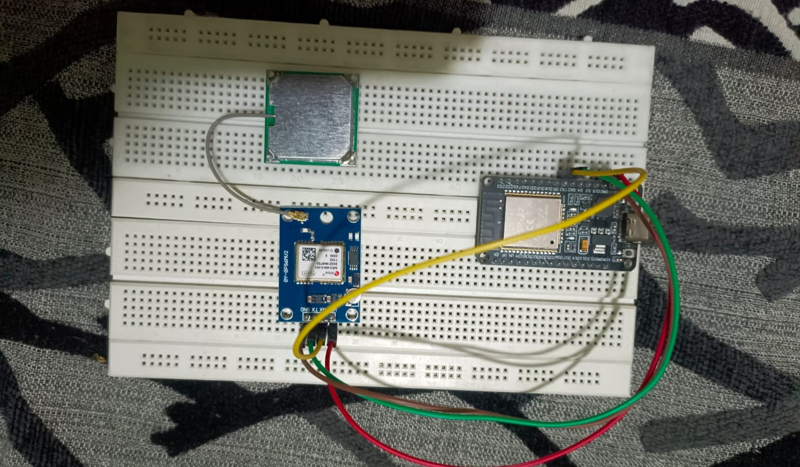
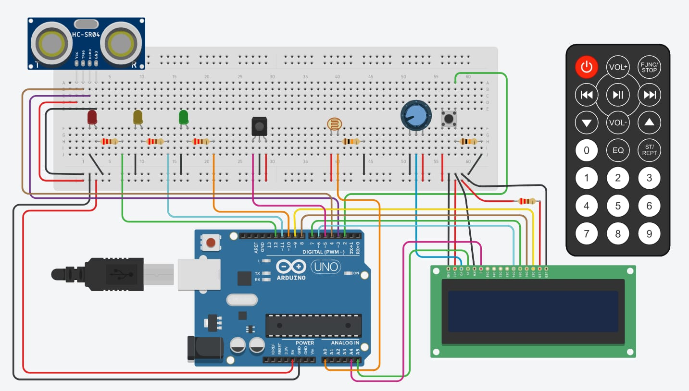
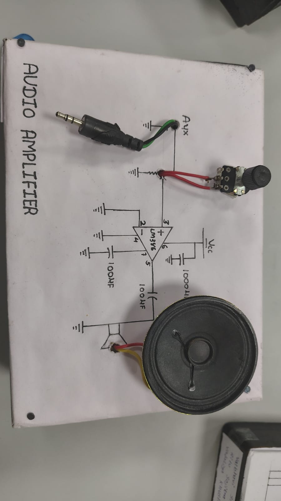
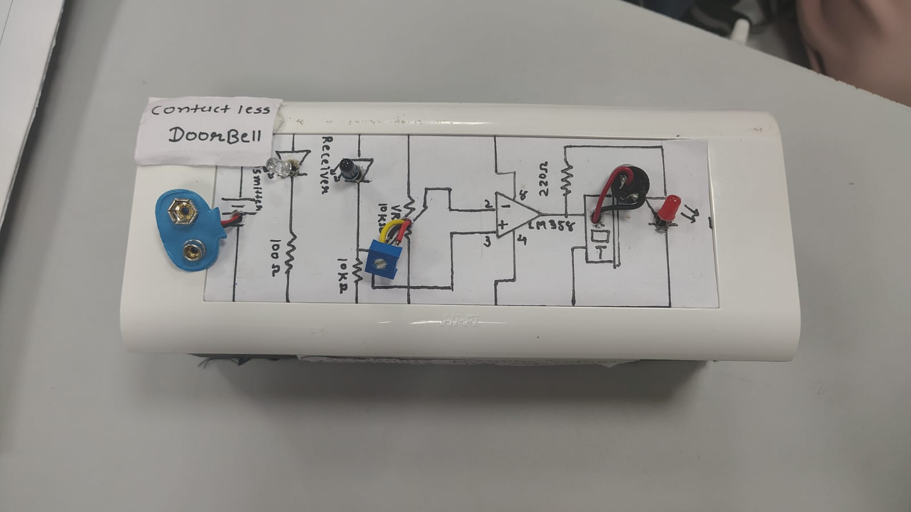
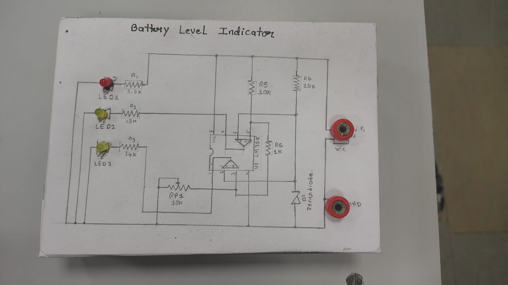
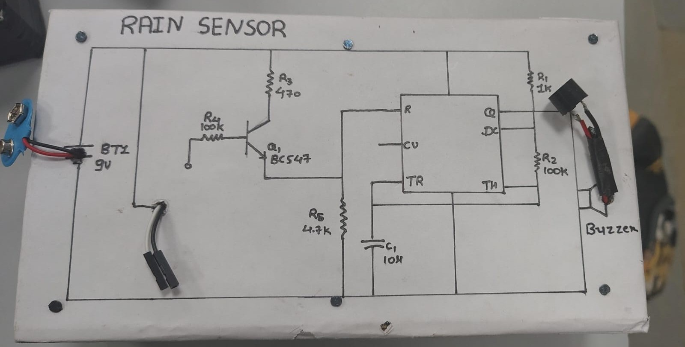

I’m a passionate Electronics and Communication engineering student focused on building practical, real-world solutions through technology. I enjoy turning ideas into impactful projects while constantly learning and improving my skills.
Built on a strong academic foundation of 94% in SSC and 93.27% in HSC, I am an Electronics and Communication Engineering student driven by curiosity and innovation. I enjoy exploring technology, solving real-world problems, and continuously upgrading my skills to turn ideas into meaningful creations. With a mindset focused on growth and impact, I strive to blend knowledge with creativity in everything I build
Read More
Through this project, I learned how to connect and interface a GPS module with an ESP32 using proper wiring and UART communication. I understood how real-time location data is received from satellites using a GPS antenna. I also gained hands-on experience with breadboard prototyping and circuit setup. This project improved my understanding of serial data transfer and embedded systems. Overall, it helped me build confidence in working with hardware and real-world IoT applications.

I learned how to build an obstacle detection system using an Arduino and ultrasonic sensor. This project helped me understand how distance is measured using sound waves and how real-time data is processed. I also gained hands-on experience with components like LEDs, LCD display, and IR remote integration. It improved my skills in circuit connections, coding, and debugging. Overall, I understood how sensors interact with microcontrollers to create smart systems.

This project demonstrates a simple audio amplifier circuit using the LM386 IC to amplify low-power audio signals. The input is given through an AUX cable, and a potentiometer is used to control the volume of the audio signal. The LM386 IC amplifies the signal, which is then passed through capacitors to filter noise and stabilize the output. Finally, the amplified signal is sent to a speaker, producing louder sound. This project helped in understanding signal amplification, IC working, and basic analog circuit design.

This project is a contactless doorbell system that uses an IR transmitter and receiver to detect hand movement without physical touch. When an object interrupts the IR beam, the receiver sends a signal to the circuit. An LM358 op-amp acts as a comparator to process this signal. Once triggered, it activates a buzzer to produce sound. A potentiometer is used to adjust sensitivity, and an LED indicates detection. This system improves hygiene and reduces physical contact.

By building this Battery Level Indicator, I have learned how to use an LM358 operational amplifier as a comparator to detect specific voltage thresholds. I've also gained practical experience with voltage dividers and zener diodes to create a stable reference voltage, allowing me to visually monitor energy levels through an LED-based interface.

Through this project, I built a Rain Sensor circuit by configuring a 555 Timer IC as an astable multivibrator to drive a buzzer. I learned how to utilize a BC547 NPN transistor as a switch, using water to bridge the sensor probes and trigger the timer. Additionally, I gained hands-on experience applying RC time constants (using R_1, R_2, and C_1) to precisely control the frequency of the audible output.